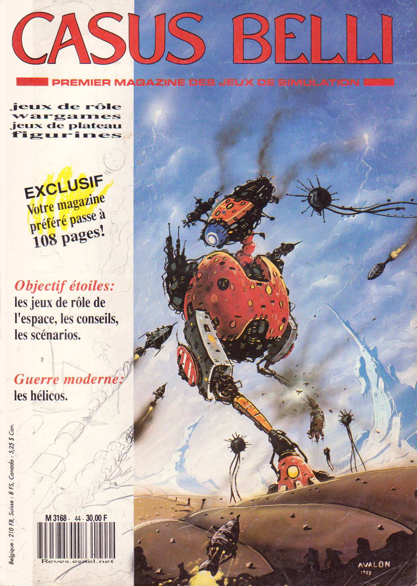

Le nouveau Casus 44 pointant son nez, je livre donc ma rétrospective parallèle.
Cela a un peu fuité dans les commentaires au-dessus, mais même si on est en toujours en 1988 (numéro de mars – avril), on change d’époque avec ce Casus Belli 44, dont la couverture invite elle-même à un décollage vers de nouvelles dimensions. Et vous noterez, coïncidence ou non, qu’on est dans la même thématique que pour celle de notre Casus 44 contemporain de BBE.

Eh oui, avec ce numéro, Casus inaugure sa formule avec son cahier de scénarios (dont la pagination augmente pour le coup) qui passe sous le format d’un encart détachable. Cela marquera durablement le magazine, et fera à la fois le bonheur des lecteurs pour trimballer facilement le matériel pour une session, et le malheur quand il faudra remettre la main sur l’encart qu’on aura imprudemment détaché et égaré… Et à propos de la couverture, on retrouvera aussi son organisation très particulière avec sa marge donnant un aperçu du sommaire et qui contraindra les futurs illustrateurs à composer avec !
Avec cette révolution dans le JDR, est-ce que la planète est elle-même en ébullition ? Eh bien pas vraiment, ce début d’année 1988 semble encore bien calme avec les conflits qui faisaient rage encore en 1987, et qui entament leurs résolutions politiques : les soviétiques en Afghanistan, les sandinistes au Nicaragua (les Etats-Unis vont bientôt s’intéresser davantage au trafic de drogue avec le Panama que la perspective d’un nouveau Cuba en Amérique Centrale). Ailleurs, la guerre Iran-Irak touche elle-même à sa fin et consacre Saddam Hussein comme bouclier pour empêcher la propagation de la révolution islamiste des mollahs, alors que son profil de boucher de Bagdad s’affirme aussi de façon manifeste sur la scène internationale avec l’attaque chimique sur sa population kurde. La politique à marche forcée de Gorbatchev de réchauffement bat son plein, et le Mur craquelle même s’il est encore difficile d’en anticiper les conséquences en cette aube de 1988. L’OTAN réduit pourtant à cette période ses forces conventionnelles en Europe, mais Caucescu, l’autre boucher, celui des Carpates, accentue l’oppression de son régime en Roumanie via sa police politique, la Securitate.
Dans l’Hexagone, la campagne présidentielle bat son plein, mais manifestement sans grande surprise sur le résultat à venir (Mitterrand n’annonce sa candidature que tardivement le 22 mars). La Nouvelle-Calédonie est en ébullition avec la prise d’otages d’Ouvéa mais je n’ai pas souvenir que cela ait fortement ébranlé le scrutin, peut-être parce que l’actualité en était trop proche. En revanche, les otages au Liban pas encore entièrement libérés sont présents lors du mémorable débat Mitterrand – Chirac à la veille du second tour, et de son tout aussi mémorable « Monsieur le Premier Ministre » (à revisionner ici en intégralité)
Les souvenirs du monde d’antan ayant été évoqués (hésitez pas pour ajouter les vôtres !), on revient sur le JDR et on attaque le contenu de ce Casus. Forcément avec tous ces changements, Didier-le-rédac-chef est lui-même contraint de refaire un édito écrit, exercice qui avait un peu disparu des numéros précédents en raison des délais resserrés de parution (mais les amateurs des crapougnats pourront apprécier que celui-ci est encore orné d’une œuvre). Les nouvelles des manifs sont fournies, autant celles à venir (3ème édition du Salon des jeux couplé avec celui de la Maquette, ou encore une murder organisée par la SNCF dans un wagon de l’Orient Express !) que celles passées : le Jet d’Or à Vitrolles (330 participants !), la Manu à Nantes ou même Annecy avec les présences remarquées de Patrick Durand-Peyrolles, Croc, Pierre Rosenthal et Didier-le-rédac-chef, Gildas Sagot et François Nedelec, n’en jetez plus ! Toujours beaucoup de clubs qui se créent encore en ces années un peu partout en France, avec une annonce ici atypique où une association propose de louer un appart de 150 m² à Paris (!!!), ouvert 24h/24 toute l’année pour pouvoir jouer tranquille (pour 150 FF par mois par membre, mais dégressif en fonction du nombre de membres) !
Les prévisions météoludique restent encore sages mais avec des annonces alléchantes parues ou à paraître : Animonde, Empires & Dynasties, Hawkmoon, ou Megatraveller en VO. Les critiques sont plurielles : pour les plus mémorables, Animonde, Illuminati, Vampires pour Chill, le Bestiaire de Maléfices ou Cthulhu Now (qui accuse maintenant bien ses 35 ans 😄 .
Sur le front des inspirations, c’est assez sage aussi : pour les BD, la suite des séries De Silence et de Sang ou Les Gardiens, et un petit billet sur le n°41 du magazine Vécu de Glénat qui publie un jeu de rôle d’Alexis Lang, qui officiait pourtant chez Jeux Descartes et en récolte un commentaire navré d’André Foussat. Du côté de Roland Wagner avec un C, il sera question du Portrait du Mal de Graham Masterton, et sur les références plus basiquement rôlistes, de la biographie de Lovecraft par Lyon Sprague de Camp et de la sortie d’Elric des Dragons par qui vous savez ! Et sinon au cinéma, qu’est-ce qu’on va voir ? Manifestement pas grand-chose car le Casus de ce bimestre revient sur The Hidden (pardon @senradackod ), la sortie de Platoon en vidéo, ou le Festival de Cognac du Film Policier qui faisait partie de ces événements assez majeurs de cinéma dans des localités improbables, au même titre que le Festival du Film Fantastique d’Avoriaz.
Passées les actualités purement jdresques ou non, le gros morceau de ce numéro est dédié à la SF avec la sortie enfin imminente de Star Wars, toujours retardé (déjà !) par les validations des ayant-droits chez Lucas. Avant de consacrer une critique et une aide de jeu sur 4 pleines pages rédigée par Croc, on a le droit à un panorama des JDR de SF antérieurs : ça fleure déjà bon l’archéorôlie avec Metamorphosis Alpha, Traveller ou Space Opera. Mais à l’époque pas besoin d’une base de données comme le GROG pour faire le tour de la question, seules quelques pages suffisent quand le thème n’est pas med fan. Cela dit l’article est sympa et complet.
L’encart scénario n’est pas en reste avec un scénario Star Wars de Jean Balczesak que j’avais trouvé anecdotique en première lecture rapide et sur lequel j’ai été agréablement surpris finalement car il ne demande qu’à être développé pour proposer un bon matériel. Toujours dans cette veine SF, on aura aussi un scénario pour Empire Galactique par @Tristan qui semble confirmer que ce n’était pas son jeu fétiche, et un AD&D par Denis Beck qui annonce Spelljammer et qui a été repris dans le Recueil de Laelith. On trouvera enfin un scénar solo Paranoïa par feu Pierre Lejoyeux dont c’était un de ses jeux fétiches, plus drôle qu’utile (c’est un solo…).
L’aide de jeu Profession est aussi consacrée du thème du numéro puisqu’il vous propulse Directeur d’opéra spatial, mais est finalement assez terre à terre dans ses conseils… En complément de tout ce matériel SF, on trouve aussi une aide de jeu Empire Galactique et une aide de jeu Star Wars – le STC 003 « Starcrasher » – destiné à fournir à l’Empire un chasseur capable de rivaliser avec les X-Wings par rapport aux trop fragiles TIE (avec une belle photo de maquette et un joli plan à l’appui).
Si le scénario de Denis Beck anticipe Spelljammer, c’est encore plus vrai avec le Bâtisses et Artifices signé par Brigitte Brunella et titré 200 000 lieues dans les airs qui propose, avec le talent habituel de cette rubrique, des moyens de locomotion d’inspiration med fan capables d’évoluer dans l’espace. Superbe !
Encore et toujours dans cette ambiance SF, on inaugure (grâce à la nouvelle pagination ?) une rubrique Métallique qui se consacre aux gammes de figurines militaires dans un futur lointain (principalement pour le récent Warhammer 40k mais qu’on peut aussi décliner pour Star Wars en attendant les modèles officiels qui sont annoncés, sortie du JDR oblige !). Puis la nouvelle pagination semble aussi bénéficier aux jeux de plateau avec deux articles consacrés respectivement à Blood Bowl (1ère édition !) et Civilization (le monster qui n’est encore que la version en VO d’Avalon Hill).
Sauf erreur de ma part, la pagination de la partie Wargames reste identique mais diminue donc en proportion du magazine. Mais les wargamers continuent d’avoir de la matière avec un dossier sur l’hélicoptère comme arme de combat, principalement orienté sur l’affrontement avec les forces du Pacte de Varsovie et le théâtre Centre-Européen. Daté donc, même si on trouve quelques prémisses de ce qu’on assiste actuellement en Ukraine puisque Laurent Henninger insiste sur l’amélioration significative de la DCA moderne pour contrer les menaces aériennes. On retrouve sinon la suite du très bon article sur la planification, rigoureux et efficace, et une interview de Franck Stora sur comment il hacke (déjà !) ses règles de wargame (ici sur Tank Leader). On termine avec deux scénarios : un pour Warhammer 40k et un pour Les Arapiles, dans la continuité des numéros précédents.
Souvent anecdotique (elle finira par disparaître), la partie Ludotique est l’occasion de présenter avec ce numéro la sortie de l’inoubliable Dungeon Master, jeu informatique qui aura fait vibrer toute notre génération (en tout cas la mienne, en profitant de l’Atari ST 1040 d’un copain).
Je termine avec un élément insolite : la nouvelle pagination est aussi l’opportunité pour Casus d’accueillir plus de pages de publicité$. J’évoquais les pages de Descartes directement relié à la Présidentielle mais on trouvera aussi celle du lancement du très intriguant concours Sur les Traces des Fils de la Terre par Gauloises Blondes Allumettes (et pas Cigarettes 😄 ), et qui prendra la forme d’un GN en plusieurs épisodes (il s’agit ici pour l’instant d’envoyer sa candidature).
Je vous reproduis pour l’occasion le bulletin de participation qui est encore dans mon Casus et après une recherche rapide, je me rends compte que cela semble soutenir une stratégie marketing de marque et d’identité produit puisqu’on trouvera une déclinaison avec un clip de pub ensuite (avec force musique à la Eric Serra).
Le bulletin :


La pub complètement cryptique (on parle quand même de boîte d’allumettes, et ce n’est pas celle des Masques de Nyarlathotep) :
http://www.culturepub.fr/videos/gaulois … -la-terre/